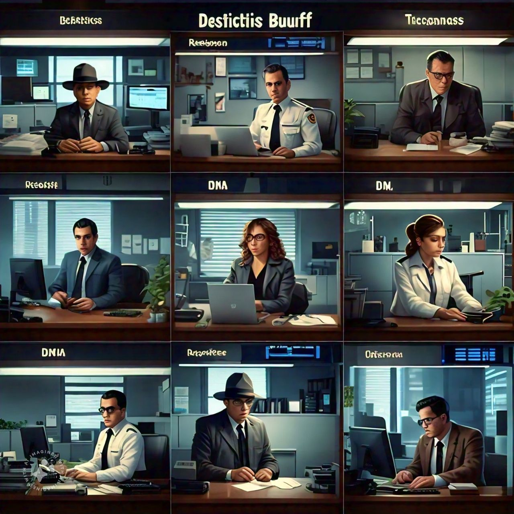

Nuestro Compromiso
"Bruchizurd Detectives Privados: Confianza, ética y resultados."
-

Lo que Nos Define
En BRUCHIZURD DETECTIVES PRIVADOS, nos dedicamos a ofrecer investigaciones rápidas y confiables, con el respaldo de nuestra experiencia técnica y jurídica. Desde el primer contacto, garantizamos la confidencialidad total mediante la firma de un acuerdo.
Confidencialidad
Los detectives privados de BRUCHIZURD tienen la obligación legal de mantener la confidencialidad sobre la información obtenida durante sus investigaciones. Proteger la privacidad de nuestros clientes y la información sensible es nuestra prioridad, garantizando la total discreción en todo momento.
Tecnología y Herramientas de Investigación
Utilizamos herramientas y tecnologías avanzadas para realizar nuestras investigaciones de manera efectiva. Esto incluye cámaras de vigilancia, sistemas GPS, software de análisis de datos, bases de datos especializadas y técnicas avanzadas de investigación, asegurando resultados precisos y de alta calidad.
Colaboración con Autoridades
En determinados casos, colaboramos con las autoridades policiales para llevar a cabo investigaciones criminales. Sin embargo, es importante señalar que, aunque nuestros detectives trabajan estrechamente con las autoridades, no tienen la autoridad legal para realizar arrestos o tomar acciones policiales directas.
Ética Profesional
Nuestros detectives se adhieren a los más altos estándares éticos y profesionales. Actuamos con integridad, respetando siempre la ley y los derechos de los individuos. Evitamos cualquier método ilegal o poco ético para obtener información, manteniendo siempre un enfoque justo y transparente en cada investigación.
Especializaciones
Nuestros detectives están especializados en áreas como investigación forense, ciberseguridad, investigación financiera y seguridad personal. Esto nos permite ofrecer soluciones personalizadas adaptadas a las necesidades de cada cliente. En resumen, combinamos habilidades investigativas, conocimientos legales y una ética profesional rigurosa para proporcionar información precisa, confiable y útil.

Historias de Éxito
Casos destacados que reflejan nuestra dedicación y resultados excepcionales.

Fraude Empresarial
Identificamos y resolvimos un esquema fraudulento que afectaba a una empresa, recuperando más del 90% de los activos perdidos.
Búsqueda Familiar
Ayudamos a reunir a una familia con un ser querido desaparecido utilizando nuestra red de contactos y herramientas avanzadas.
Infidelidad Confirmada
Proporcionamos pruebas irrefutables que ayudaron a nuestro cliente a tomar decisiones informadas sobre su futuro personal.
Nuestros casos de éxito reflejan el compromiso, la ética y la confidencialidad con los que trabajamos cada día.
Contáctanos
Estamos aquí para ayudarte. Contáctanos y te responderemos pronto.